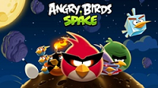
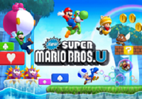
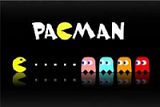

Jogos
- No momento temos só essas opções de jogos. divirta-se!
 Angry Birds o famoso jogo de iPhone de iPad, agora pode ser jogado de graça no seu browser. Atire os passáros com o estilingue gigante e acabe com os porcos que roubaram os ovos!
 Ajude o Super Mario a passar por novos estagios em cenários bem semelhantes aos clássicos jogos do personagem, pulando em cima de inimigos, pegando moedas, cogumelos e tudo mais que encontrar pelo caminho que te der pontos.
 Pac Man É um jogo eletrônico criado pela Tohru Iwatani para a empresa Namco, e sendo distribuido para o mercado estadunidense pela Midway Games. Produzido originalmente para Arcade no início dos anos 1980, tornou-se um dos jogos mais populares no momento, tendo versões para diversos consoles e continuacões para tantos outros, inclusive na atual.